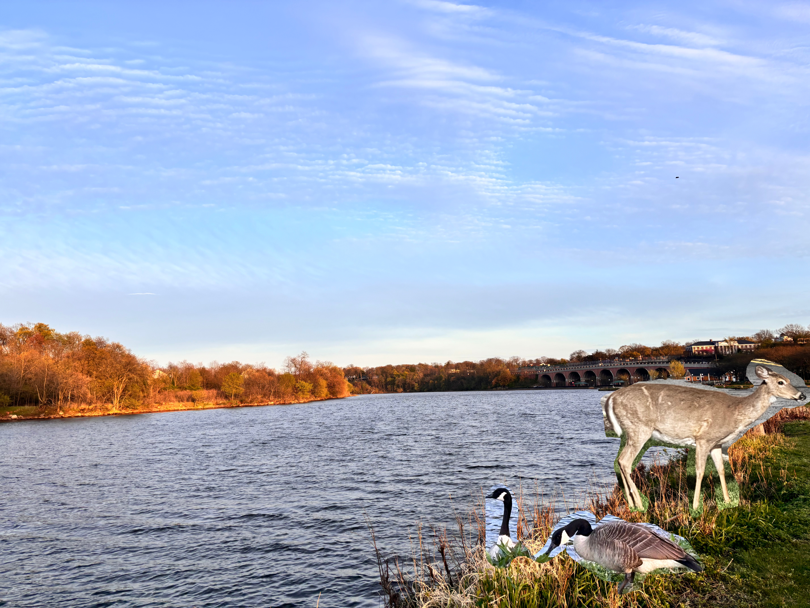

I like to take photos of nature when there is something interesting to take a picture of. This image is a compilation of 3 photos I have taken this year, a photo of the Raritan River on a day there was a nice sunset, a photo of a deer, and a photo of geese. This image was made by using the photo of the Raritan River as the base, and then putting the animals on top of that image as to make it seem like they are along the river. The animals were part of bigger photos but I removed all of the extra scenary from their respective photos. I also placed and oriented the animals so that it would seem like they are existing along the river. There are no copyright requirements or credits needed to be given for the photos I used because I personally took each of the photos involved.